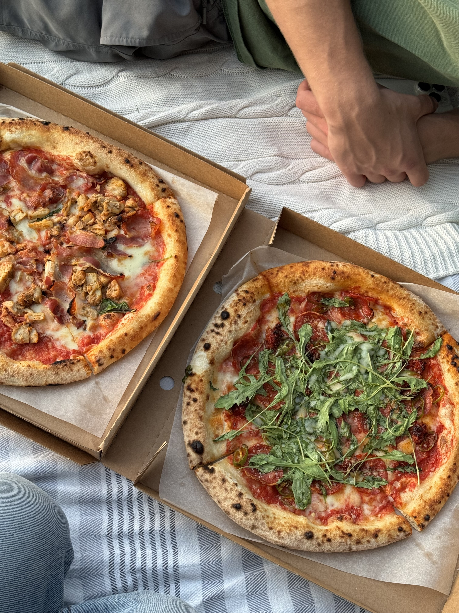
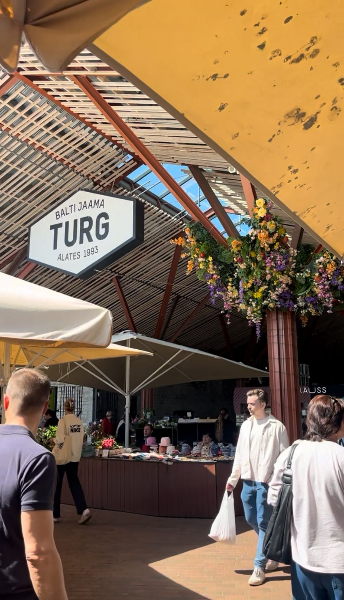

Tallinn is already one of Europe's most affordable food cities. While your friends in Helsinki are paying 18 euros for a lunch salad, you can sit down to a proper two-course meal in Tallinn for 10-15 euros. Street food runs 5-10 euros, and even fine dining here is 40-60% cheaper than in the Nordic capitals next door.
The secret weapon of budget eating in Tallinn is the päevapraad — the daily lunch special. Nearly every Estonian restaurant offers one: a full meal (often soup + main + drink) for a fixed price, usually between 5 and 8 euros. It is the single best budget hack in the city, and locals rely on it heavily.
I have been eating my way through Tallinn for years, and this guide compiles every genuinely good cheap eat I have found — from medieval cellars where elk soup costs less than a coffee in Stockholm, to a family-run Uzbek bakery that serves the best value meal in the entire city.
1. Ultra-Cheap: Under 5 Euros
Yes, you can eat a real meal in a European capital for under 5 euros. These two spots prove it.
III Draakon
Medieval Tavern · Town Hall Square · €This is quite possibly the most unique cheap eat in all of Europe. Tucked inside a medieval cellar directly on Town Hall Square, III Draakon serves elk soup for 2.50 euros and meat pies for 1.50 euros. The staff are in costume, there are no utensils, and the atmosphere is pure 15th-century Tallinn. It sounds like a tourist trap but the food is genuinely good and the prices are absurdly low.
Must-try: Elk soup (2.50 euros) · Location: Town Hall Square, Old Town
Papa Joe Falafel
Lebanese · Near the Port · €A small, no-frills Lebanese spot near the port that has built a fiercely loyal following. The falafel wraps cost 3.50-5 euros and they are packed with flavor — crispy falafel, fresh vegetables, tahini, and pickles. The portions are generous for the price. Not much seating, but perfect for a quick grab-and-go lunch.
Must-try: Falafel wrap (3.50-5 euros) · Location: Near Tallinn passenger port
2. Budget Classics: 5-10 Euros
This is the sweet spot for budget eating in Tallinn. For 5-10 euros, you get a full, satisfying meal at places that locals actually go to. No compromises on quality here.
Kompressor
Pancake Pub · Old Town · €An Old Town institution that has been filling up students and backpackers for decades. Kompressor serves 29 varieties of enormous pancakes — both savory and sweet — for 5-8 euros each. One pancake equals one meal. The ham and cheese pancake is the size of your head, and the Nutella banana dessert version is a crowd favorite. The pub-like atmosphere and cheap beer make it even better.
Must-try: Ham and cheese pancake (around 6 euros) · Location: Rataskaevu 3, Old Town
Lido
Self-Service Cafeteria · Solaris Center · €A self-service cafeteria in the Solaris Center shopping mall where you pick exactly what you want from a massive spread. Estonian, Russian, and European dishes are all represented — soups, roasted meats, salads, fresh pastries, and more. Load up your tray, pay by weight or item, and walk away with a full lunch for 5-7 euros. No pretense, just honest, hot food.
Must-try: Build your own lunch tray (5-7 euros) · Location: Solaris Center, Estonia pst 9
Boheem Cafe
Cafe · Kalamaja · €Hidden inside a charming bohemian wooden house in Kalamaja, Boheem Cafe serves crepes, omelets, and soups starting from just 4.60 euros. The setting alone is worth the visit — mismatched furniture, warm lighting, and a garden courtyard in summer. The food is simple but well-made, and the prices are remarkably low for the quality of the experience.
Must-try: Crepes from 4.60 euros · Location: Kopli 18, Kalamaja
F-Hoone
Industrial Bistro · Telliskivi · €-€€Located in the heart of Telliskivi Creative City, F-Hoone is a buzzing restaurant in a converted factory space. The menu is huge — burgers, salads, pasta, Asian-inspired dishes — and the weekday lunch specials run from about 6-8 euros. The industrial chic atmosphere is a bonus. This is where Tallinn's creative crowd eats lunch.
Must-try: Weekday lunch special (6-8 euros) · Location: Telliskivi 60a, Telliskivi Creative City
Samsa Family Bakers
Uzbek · Balti Jaama Turg · €This is, in my opinion, the single best value meal in Tallinn. A family-run Uzbek bakery inside Balti Jaama Turg market, Samsa Family Bakers makes everything by hand — flaky samsa pastries stuffed with lamb or beef, fragrant plov rice, and hearty lagman noodle soup. A full meal costs 4-8 euros. They are rated 4.7 out of 5 on TripAdvisor for good reason. Do not skip this place.
Must-try: Lamb samsa + plov (around 6 euros total) · Location: Balti Jaama Turg, Kopli 1
Damak Doner & Kebab
Turkish · Late-Night Option · €When you need a solid, filling meal late at night, Damak is the answer. Authentic Turkish kebabs with fries and a drink for about 7.50 euros. The doner is freshly shaved, the bread is warm, and the portions are generous. A reliable go-to that is open when many other cheap spots have closed for the evening.
Must-try: Kebab with fries and drink (around 7.50 euros) · Location: Central Tallinn
Budget Hack: Päevapraad
Nearly every restaurant in this section also offers a päevapraad (daily lunch special) on weekdays, usually from 11:00 to 15:00. Even if it is not listed on the main menu, ask about it. You will often get soup + main + drink for 5-8 euros. Check paevapraad.ee to browse daily specials across the city before you head out.
3. Affordable Sit-Down: 8-15 Euros
Want a proper sit-down restaurant experience without the mid-range price tag? These spots deliver real atmosphere and quality cooking for 8-15 euros per person.
Georgian Tavern Tbilisi
Georgian · Old Town · €€Authentic Georgian food with generous portions that will have you loosening your belt. The khinkali (Georgian soup dumplings) are handmade and come in orders of five. Add some khachapuri (cheese bread) and a glass of Georgian wine, and you have one of the most satisfying meals in Old Town. The flavors are bold and the hospitality is warm.
Must-try: Khinkali dumplings · Location: Ruutli 18, Old Town
Baojaam
Taiwanese · Balti Jaama Turg + Old Town · €Taiwanese steamed buns (bao) done right in Tallinn. Two fluffy buns cost about 8 euros, and they are stuffed with fillings like crispy chicken, braised pork belly, or tofu. The crispy chicken bao is the crowd favorite and for good reason. They have locations in both Balti Jaama Turg and the Old Town, so you are never far from a fix.
Must-try: Crispy chicken bao (2 buns for around 8 euros) · Locations: Balti Jaama Turg & Old Town
Pegasus
European · Old Town · €€A Tallinn institution since 1962, Pegasus occupies a prime Old Town location and has evolved into a modern European restaurant with excellent vegan options. The real value play here is the weekday lunch special at 6-7 euros — a proper sit-down meal at a historic restaurant for the price of a fast-food combo. Dinner is pricier, but lunch is a steal.
Must-try: Weekday lunch special (6-7 euros) · Location: Harju 1, Old Town
Naljane Põder (The Hungry Moose)
Estonian Canteen · Near Balti Jaama Turg · €If you want to eat like an Estonian local, this is where you go. Naljane Põder is a söökla — a traditional Estonian canteen — serving hearty, no-fuss meals like pork schnitzel, meatballs with gravy, and root vegetable stews. Meals run 5-9 euros. The vibe is decidedly unglamorous, but the food is comforting and the portions are honest. This is the real Estonia on a plate.
Must-try: Daily canteen special (5-9 euros) · Location: Near Balti Jaama Turg
4. Balti Jaama Turg: Your Budget Food Headquarters
If there is one place in Tallinn that every budget-conscious eater needs to know, it is Balti Jaama Turg (Baltic Station Market). This sprawling market adjacent to the main train station and right next to Telliskivi Creative City is the single best destination for affordable food in the city.
The numbers speak for themselves: over 300 stalls and more than 40 food vendors, all under one roof (plus outdoor sections in warmer months). The diversity is staggering — Uzbek, Taiwanese, Indian, Georgian, Turkish, Vietnamese, Italian, Estonian — and the competition between vendors keeps prices low and quality high.
Balti Jaama Turg Essentials
Hours: Approximately 9:00-19:00 (some vendors stay until 20:00) · Location: Kopli 1, directly adjacent to Balti Jaam train station and Telliskivi Creative City · Getting there: Tram 1 or 2 to Balti Jaam stop
What to Eat at the Market
- Samsa Family Bakers — Handmade Uzbek samsa pastries and plov (4-8 euros)
- Baojaam — Taiwanese steamed buns (around 8 euros for 2)
- Kebab stalls — Turkish and Middle Eastern grilled meats (5-8 euros)
- Indian street food — Curries, naan, and samosas (5-9 euros)
- Vegan burger stands — Plant-based patties with creative toppings (6-9 euros)
Beyond Prepared Food
The market is not just about ready-to-eat meals. It is also one of the best places to buy fresh produce, artisan cheese, smoked fish, and local bread at prices well below what you would pay in a supermarket. If you have access to a kitchen (or just want to put together a picnic), the market is your best friend. Grab some smoked salmon, Estonian rye bread, local cheese, and fresh berries and you have a meal that would cost three times as much at a restaurant.
5. 10 Tips for Eating Cheaply in Tallinn
Beyond knowing the right restaurants, these practical tips will help you stretch your food budget even further.
- Eat lunch, not dinner. The päevapraad (daily lunch special) is available at most restaurants on weekdays for 5-8 euros. The same restaurant might charge 15-25 euros for dinner. Lunch is where the value is.
- Check paevapraad.ee before you go out. This website aggregates daily lunch specials from restaurants across Tallinn. Browse it in the morning and plan your lunch around the best deal of the day.
- Avoid sitting directly on Town Hall Square. The restaurants lining Raekoja plats charge a steep premium for the view. Walk just one block in any direction and prices drop dramatically. The one exception is III Draakon, which is genuinely cheap.
- Head to Telliskivi + Balti Jaama Turg. This area has the highest concentration of cheap, high-quality food in the city. You could eat here every day for a week and never repeat a cuisine.
- Do not overlook grocery stores. Estonian supermarkets like Selver, Rimi, and Prisma have excellent prepared food sections with hot meals, salads, and baked goods for 2-5 euros. Prisma in particular has a surprisingly good hot food bar.
- Tap water is free and safe. Unlike some European countries where restaurants push bottled water, tap water in Tallinn is clean and good-tasting. Most restaurants will bring it free of charge if you ask.
- Alcohol is affordable compared to Scandinavia. A draft beer in Tallinn costs 4-6 euros, compared to 7-10 euros in Helsinki or Stockholm. Wine by the glass is similarly reasonable. You do not need to pre-game at home to save money.
- Estonia uses the euro and cards are accepted everywhere. You do not need cash. Even the smallest market stalls accept contactless payment. This makes it easy to stick to a budget without worrying about ATM fees or currency exchange.
- Tipping is not mandatory. Estonian restaurants do not expect American or British-style tips. If you receive excellent service, rounding up or leaving 5-10% is appreciated but never expected. This alone saves you 15-20% compared to tipping cultures.
- Portion sizes are generous. Estonian restaurants serve big plates. One main course is usually more than enough for one person. Resist the urge to order a starter and a main — start with just a main and see how you feel.
The Math
Using these tips, you can comfortably eat three meals a day in Tallinn for 20-30 euros total: a pastry and coffee for breakfast (3-5 euros), a päevapraad lunch (5-8 euros), and a budget dinner (8-15 euros). That is roughly what a single dinner costs in Helsinki.
Frequently Asked Questions
How much does a meal cost in Tallinn?
Tallinn is very affordable by European standards. Street food and quick bites cost around 5-10 euros. A proper sit-down meal at a budget restaurant runs 10-15 euros per person. Mid-range restaurants typically charge 20-35 euros, while fine dining ranges from 50-80 euros per person — still 40-60% cheaper than Helsinki or Stockholm.
Is Tallinn cheap for food?
Yes. Tallinn is one of the cheapest food cities in Northern Europe. Compared to Scandinavian capitals, you can expect to pay 40-60% less for comparable quality. Daily lunch specials (päevapraad) are available from 5-8 euros, draft beer costs 4-6 euros, and even fine dining is remarkably affordable by Western European standards. For travelers from the UK, US, or Nordics, Tallinn feels very inexpensive.
Where do locals eat cheaply in Tallinn?
Locals flock to Balti Jaama Turg market for diverse, affordable food from over 40 vendors. The Telliskivi Creative City and surrounding Kalamaja neighborhood offer great value at places like F-Hoone and Boheem Cafe. Many locals also rely on the päevapraad (daily lunch special) system, browsing paevapraad.ee to find the best deals near their workplace each day.
What is päevapraad?
Päevapraad literally translates to "daily dish" in Estonian. It is a lunch tradition where restaurants offer a complete meal — usually including soup, a main course, and sometimes a drink — for a fixed low price, typically between 5 and 8 euros. It is available on weekdays (usually from 11:00 to 15:00) at the vast majority of Estonian restaurants, from neighborhood cafes to upscale bistros. It is the single best budget hack for eating in Tallinn.
Save Even More at Tallinn's Restaurants
Already eating cheaply? Stack a Nomi Pass membership on top. Get 15-20% off at 50+ restaurants across Tallinn — including many of the budget spots in this guide. One membership covers your whole table.
Join the WaitlistKeep Exploring Tallinn's Food Scene
This guide is part of our growing collection of Tallinn dining resources. Dig deeper with these related articles:
- The Complete Tallinn Food Guide — Our comprehensive overview of everything worth eating in the city.
- Best Restaurants in Kalamaja — A deep dive into Tallinn's trendiest neighborhood for food.
- Best Cocktail Bars in Tallinn — Where to drink well without overpaying.
- The Complete Guide to Restaurant Deals in Tallinn — Happy hours, loyalty programs, and every other way to save money dining out.